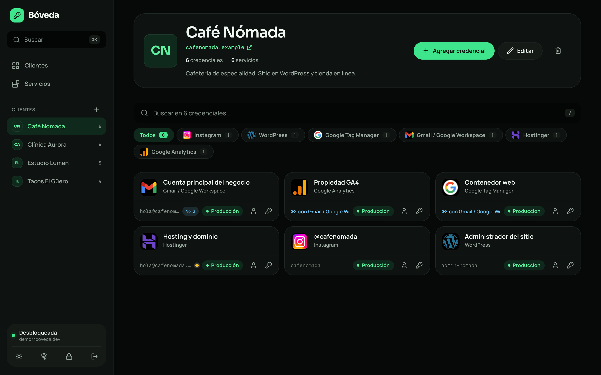
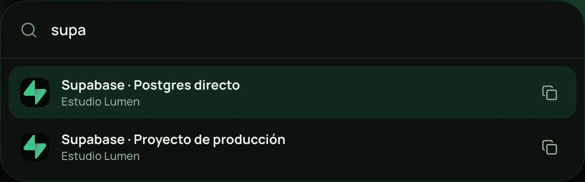
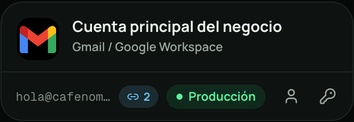

Organizada por cliente
Creas al cliente y enlazas las cuentas que tiene en cualquier servicio. Se acabó la lista de accesos sueltos.
Open source · MIT · autoalojada
Eres freelance. Cada cliente trae su Gmail, su hosting, su base de datos y su servidor. Bóveda los organiza por cliente y cifra todo en tu navegador antes de que salga.



Antes
Con Bóveda
Demo en vivo
Elige un cliente, busca, copia, crea una nueva. Los datos son ficticios y nada sale de esta página.
Creas al cliente y enlazas las cuentas que tiene en cualquier servicio. Se acabó la lista de accesos sueltos.
Ctrl K o ⌘K: escribes dos letras y copias una contraseña sin abrir nada.
Touch ID, Face ID o Windows Hello con passkeys, sin debilitar el cifrado.
Google, Meta, Supabase, Vercel, Cloudflare, Stripe y más, cada uno con su logo y su plantilla de campos.
Marca que Tag Manager entra con el Gmail del cliente y los atajos copian el usuario y la contraseña correctos.
El portapapeles se limpia a los 30 s, la bóveda se bloquea a los 15 min sin uso y las contraseñas viejas se marcan para rotar.
Del caos de chats y notas a un solo atajo. Toda la idea, en menos de un minuto.
Modelo de seguridad
Tu contraseña maestra nunca viaja. De ella se deriva una llave en tu navegador, esa llave cifra cada credencial y el servidor solo guarda texto cifrado.
Necesitas Node 22 y un proyecto de Supabase; el plan gratuito alcanza.
# 1 · clona e instala
$ git clone https://github.com/yairhdz24/boveda7k.git
$ cd boveda7k && npm install
# 2 · pega las migraciones de supabase/migrations en el SQL Editor
# 3 · copia tus llaves públicas de Supabase
$ cp .env.example .env.local
# 4 · listo
$ npm run devLicencia MIT · sin planes de pago
Si te ahorra diez minutos, regálale una estrella. Ayuda a que otros freelancers la encuentren.